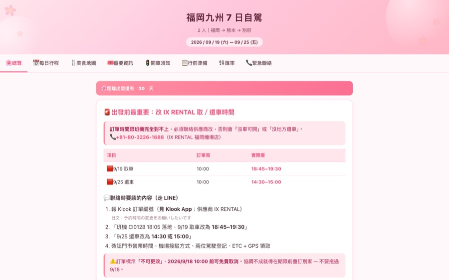
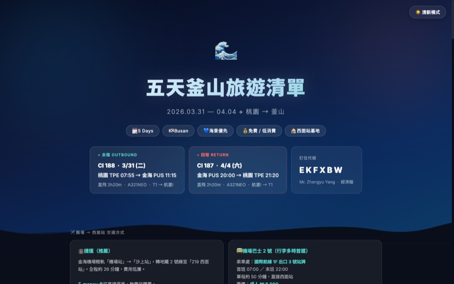
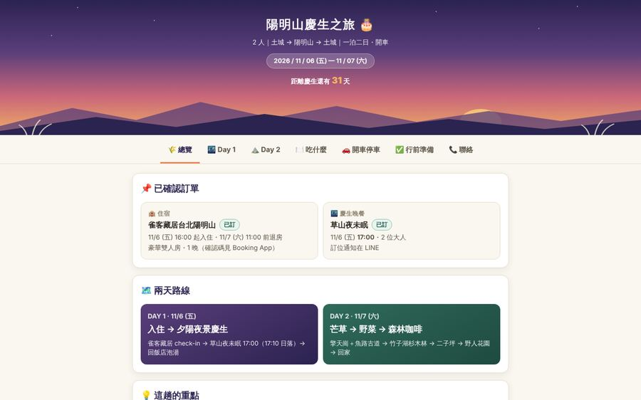
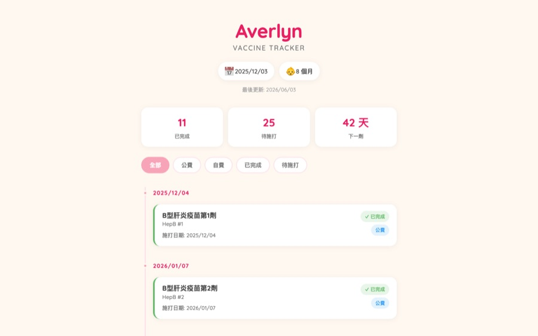

01
福岡九州 7 日自駕行程
2026九州自駕的完整手冊。八個分頁裝了每日行程、美食地圖、開車須知跟緊急聯絡，另外內建即時匯率換算和「今天是 Day N」的倒數。日本 9/1 上路的生活道路速限新制、白銀週五連休會造成的塞車，都寫進去了。
- Build
- 單一 index.html，無框架無 build step
- Feature
- 即時匯率 API、行程倒數、手機優先版面
- Size
- 113 KB

四個自己在用的網站。都是靜態站，沒有後端、沒有資料庫、不用登入。
九州自駕的完整手冊。八個分頁裝了每日行程、美食地圖、開車須知跟緊急聯絡，另外內建即時匯率換算和「今天是 Day N」的倒數。日本 9/1 上路的生活道路速限新制、白銀週五連休會造成的塞車，都寫進去了。

釜山五天四夜的逐日清單，走海景優先、低消費的路線。深色主題配一個可切換的清新模式，裡面有地鐵路線圖、機場交通比較、行李寄放點，還有每個景點實際怎麼走。

給老婆過生日的陽明山一泊二日。七個分頁放了逐日時間軸、竹子湖不點雞也吃得好的店、停車與下山塞車的時段，還有可以打勾的訂位清單。日落時間用 NOAA 公式算好，慶生晚餐的訂位就卡在夕陽轉夜景的那十分鐘。

追蹤女兒對照台灣公費與自費時程的 36 針接種進度。時間軸依日期分組，可以篩已完成、待施打、逾期，並顯示下一劑倒數。中間曾經長出 FastAPI + Supabase 後端讓任何裝置都能改，後來刻意砍掉退回純靜態，資料在 build 時烘進 bundle，瀏覽器一支 API 都不打。

2014 年至今。區塊鏈金融、加密貨幣交易所、遊戲、政府標案。
Backend Senior Associate Manager
2023 年底以工程師身份加入，做 AML 區塊鏈風控與合規鑑識，2025 年初轉管理職。現在帶整個後端團隊，同時保留對系統設計的最終判斷。
Senior Software Engineer
開發 Spring Cloud 微服務與資料管線，同時擔任 Scrum Master 帶 Sprint。
Software Deputy Manager
開發與維護 Spring Cloud 微服務，同時是我第一段帶人的經歷。
Senior Java Software Engineer
博弈產業，主場是高併發與金流整合。
Java Developer
從需求訪談一路做到交付的政府專案。
Senior Java Software Engineer
職涯起點。承接政府標案，從開發做到弱掃修補。
把重複的工作流程做成工具。
NUEiP 人資系統的 MCP server。讓任何 MCP client 用自然語言查出勤、假期餘額、團隊請假跟待簽核。密碼走 macOS Keychain，不落地。
PythonClaude Code 的 agent team 模板。develop team 的 pm 刻意沒有寫檔權限，逼他真的派工；consult team 則是三位不同領域的專家互相辯論。用 tmux split pane 即時看所有人的對話。
TypeScript可分享的 Claude Code skills 集合，以 toolkit-pub plugin 發佈。裝一次之後新增的 skill 會自動拿到。目前收錄 NUEiP 一鍵查詢，單一入口路由八個子指令。
Claude Skill我 2023 年底加入 XREX，一開始做 AML 區塊鏈風控跟合規鑑識的系統，2025 年轉管理職，現在帶後端團隊。在這之前在 Binance 寫微服務跟資料管線，同時擔任 Scrum Master。更早則在遊戲產業處理高併發金流，在系統整合商交付政府標案。Java 跟 Spring 是這十二年的主軸。
當了主管之後，判斷事情的標準變成兩件：這個設計三年後還撐不撐得住，還有團隊的人這一季有沒有真的長出東西。技術決策我要求留下記錄，為什麼選 A 不選 B，比選了什麼更重要。
下班寫的東西通常很小，而且都是自己會用的。出國前想要一份離線也能翻的行程，就做了一個；女兒出生後要追 36 針疫苗，也做了一個。共同點是沒有後端、不用登入、開網址就能用，因為要給家人用，不能有學習成本。另一條線是把重複的工作做成工具，MCP server、Claude Code 的 agent 模板、可分享的 skill 集合都屬於這類。
學歷是朝陽科技大學資訊工程，2012 年畢業。
對上面任何一個東西有興趣，或者想談後端跟團隊管理，都可以找我。